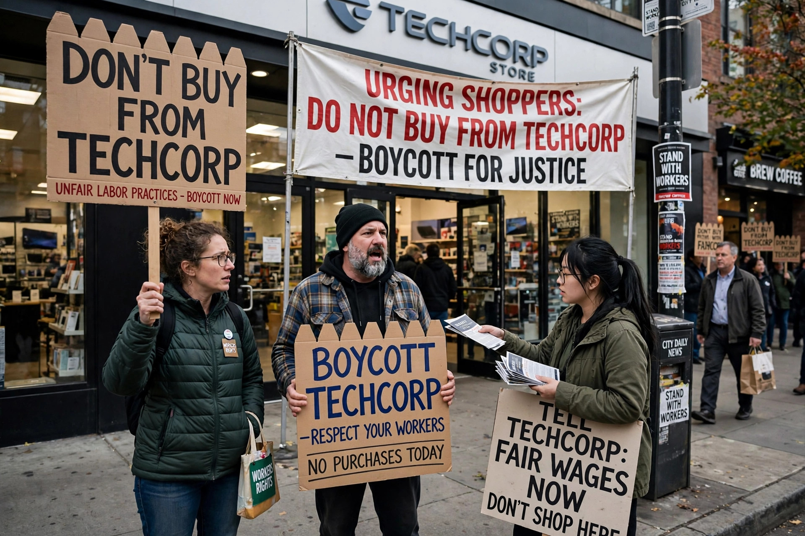

A consumer boycott is an attempt by one or more parties to achieve objectives by urging individual consumers to refrain from making selected purchases. It is a form of collective action and consumer activism in which purchasing power is used as political or ethical leverage.

The word derives from Charles Boycott, the Irish land agent ostracised in 1880.
Notable boycotts include the Montgomery bus boycott (1955–56) against segregated buses, central to the US civil rights movement; boycotts of South African goods during apartheid; the United Farm Workers' grape boycott for farmworkers' rights; boycotts of Nestlé over infant-formula marketing; and campaigns against companies over environmental practices, labour conditions or political positions.
Scholars find boycotts often work less by reducing sales than by damaging reputation and attracting media attention, pressuring firms or governments to negotiate. A threatened boycott that wins concessions before it begins may be counted a success. Counter-mobilisations, sometimes called "buycotts", encourage supporters to buy from the targeted firm.
In some jurisdictions secondary boycotts by unions are restricted, while consumer boycotts for political ends have received free-speech protection, notably in the US Supreme Court case NAACP v. Claiborne Hardware Co. (1982).